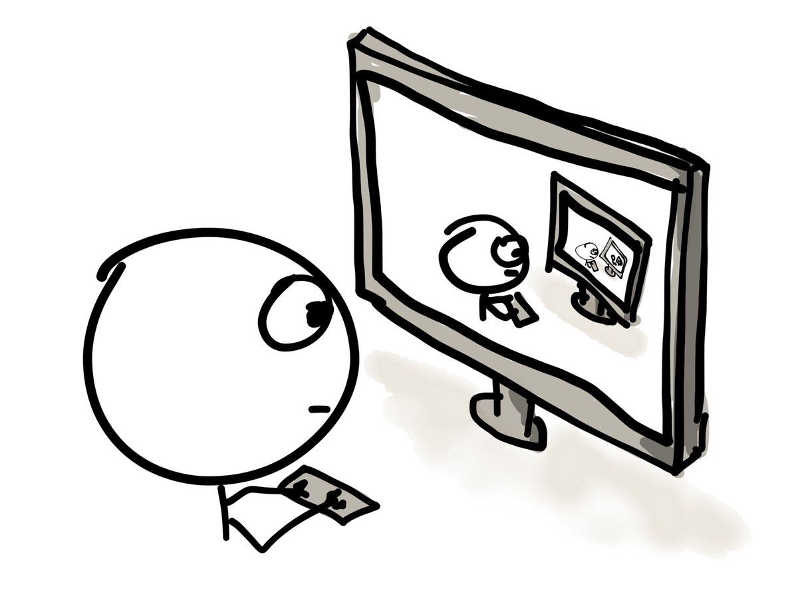

Backtracking este o metodă de parcurgere sistematică a spaţiului soluţiilor posibile al unei probleme. Este o metodă generală de programare, şi poate fi adaptata pentru orice problemă pentru care dorim să obţinem toate soluţiile posibile, sau să selectăm o soluţie optimă, din mulţimea soluţiilor posibile. Solutia este compusa din mai multe elemente (x1, x2, x3…xn) in care fiecare element xi este ales dintr-o multime corespunzatoare Mi numita multimea de baza a elementului xi. Backtracking este însă şi cea mai costisitoare metodă din punct de vedere al timpului de execuţie.
Metoda backtracking o folosesti atunci cand vrei sa inspectezi intregul spatiu posibil de solutii, toata plaja de raspunsuri posibile pentru o problema, pentru a determina raspunsul corect (sau un raspuns acceptabil), iar intre raspunsuri exista unele relatii (caci altfel nu ai mai avea un arbore de decizie pe care sa operezi iar metoda s-ar numi simplu brute force). Altfel spus: backtracking este pentru arbori (sau mai general, grafuri), ceea ce brute force este pentru vectori.
